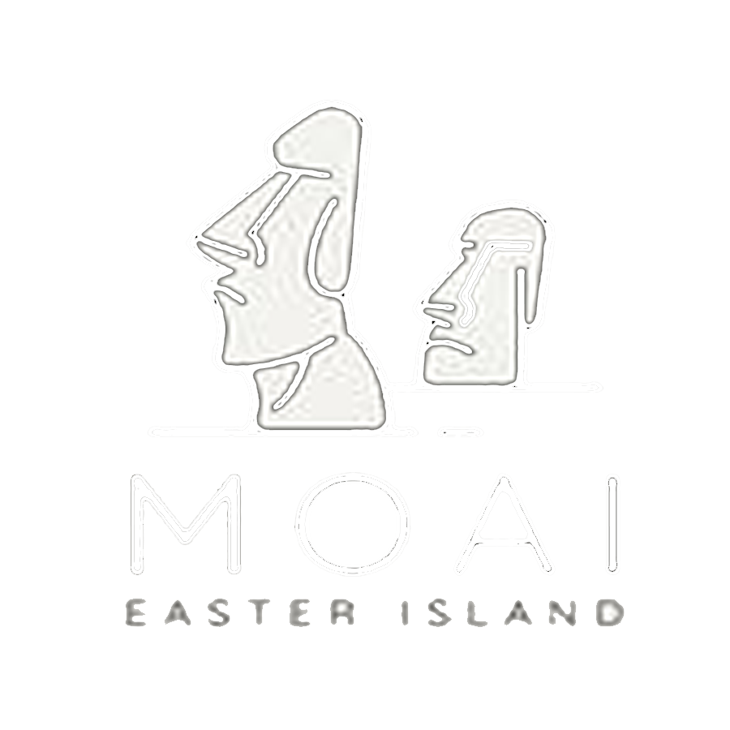
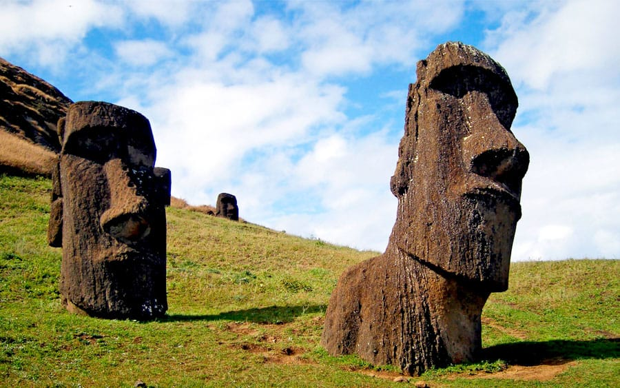

Son el legado arqueológico mas visible e impresionante de Isla de Pascua. Todos conocemos Rapa Nui por sus grandes e imponentes estatuas construidas con piedra volcánica, pero ¿qué son realmente estos monumentos? ¿Qué representan y cómo fueron construidos? Revisa junto a nosotros la más completa historia de los famosos Moai.
Que son y que representan?
Los Moai son gigantescas estatuas de piedra construidas por los nativos de Isla de Pascua. Son la expresión cultural más grande de los habitantes de esta isla y un fiel reflejo hasta el día de hoy su cultura y tradiciones.
Para entender qué representan estos gigantes de piedra es necesario recurrir a al idioma nativo y a su nombre original. En el idioma rapanui los Moai sellaman Moai Aringa Ora. ¿Qué significa esto? La traducción exacta es «el rostro vivo de nuestros ancestros».

Tal como su nombre lo dice, los moai fueron construidos con el fin de recordar y preservar la energía de los nativos que habían muerto. Esto era muy importante para ellos que creían que los no vivos poseían una energía llamada «mana» con la cual controlaban y protegían a la tribu y controlaban las cosechas, cultivos y animales. Los moai canalizaban la energía (el mana) y lo atraían a tierra.
Pagina